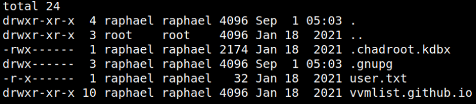
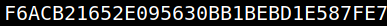

4.4 Log in as "raphael" (First flag)
1. On the previos 4.2 point you got a “Reverse Shell”. Now you can log in with this credentials.
USER “raphael”
PASSWORD “_double_trouble_”
$su raphael
2. List the files.
$cd home
$cd raphael
$ls -la
$cd raphael
$ls -la
Output:

3. Show the file “
user.txt”.$cat user.txt
Output:
